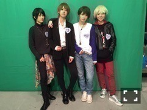

| 2016/10 25 Tue | ちー様に変身。(´>∀<｀)ゝ |
ちはるーむへようこそ！
昨日のNOGIBINGO!7では
ちー様に変身していました。笑
男装4人組！

今となってはキメキメな私たちが怖い。
それくらいなりきってやっていました。笑
ちー様(19)埼玉県
っていうのが地味に面白くて
私的にはツボでした。
そんなに大人ぶってるのに19歳かよ！
っていう。。
そして、ずっと男装をやってみたかったので
とても嬉しかった( ◦˙ ˙◦ )！！
でもまさかカップリングを
やるとは思ってなかったので
メンバーをキュンキュンさせる事が
出来たのかは心配ですが( ˟_˟ )、
花奈が私に告白してきてくれて
裏でも「本当かっこいい！！」って
ずっと言ってくれて
それだけで大満足です〜
照れてる花奈が可愛かった( ˙³˙)
個人的にはかずやの本当にいるそう感が
好きでした( ¨̮ )( ¨̮ )( ¨̮ )笑
皆さんは誰がタイプでしたか？？
-------------------------♡
！ChihAnswer！
 みに。さん
みに。さん
・ウユニ塩湖って知ってますか？
→知ってるよ！！
本当綺麗だよね〜
写真見てるだけでも素敵だけど、
人生のうちに、絶対に行きたい場所！！
幻想的な写真を沢山撮りたいな〜
ピッキーさん
・最近朝が寒くなってきて、布団から出られなくなってきました。ちーちゃんは朝寒い時すぐ毛布から出られる？また、出られないときの対処法は？
→私も全然出られないよ〜( ˟_˟ )
たまに上着着るの忘れて
Tシャツ1枚で寝ちゃうから、
朝起きたら寒すぎて布団にくるまっちゃう。
だからお母さんが上着持ってきてくれたり、
布団から引っ張り出してくれます。
実家の特権...(> <)笑
でも寒いって簡単にはどうすることも
できない気がする。。
皆さんは逆にどうやって起きてますか？
ななお。さん
・乾燥肌で困ってて...ちーちゃんの肌ケア教えてください！
→最近は、化粧水と乳液の前に
ホホバオイルを1円玉くらいの量をとって
顔に塗っているよ！
ホホバオイル塗るだけで、
化粧水と乳液の浸透力が全然違うの。
お母さんとびっくりしてた！笑
私は無印良品のホホバオイル使ってるよ〜
そんなに高くないので試しやすいはず！
ちゃんぽんさん
・自分は大学の第二外国語でスペイン語を習ってるのですが、ちーちゃんも大学で第二外国語勉強してますか？
→私はフランス語を勉強してるよ！
正直難しすぎて全然分からない...
でも折角なら、この習っているフランス語を
いつかフランスで話してみたい！と
思っているから、
実践的な会話を学びたいと思って
NHK Eテレでやっている
「旅するフランス語」
っていう番組を見てるんだ〜
習っている言葉も出てくるので、
復習も兼ねて見ています。
面白いよ( ◦˙ ˙◦ )
確か「旅するスペイン語」もあった気がする！
ダムちゃんさん
・ちーちゃんが思う、アメフトの1番の魅力ってなんだと思いますか？
→アメフトには目立つポジョンがあって
ボールが動く範囲にばかり
目が行きがちなんだけど、
実は一人一人にちゃんとした役割があって
その役割を果たしているから
ボールが作戦通りに動いている。
その一人がいなかったら機能しない。
一人一人が主役なところだと思います。
言葉が難しい...！！
伝わったかな...？
うるふ43さん
・ファッション誌でやってみたい企画ってある？
→数少ない洋服の中での着回し企画や、
このシーンにはこの服！とシーン別のファッションを考えたり、
普段服に自信がない子を大変身させる企画だったり、
メイクからヘアから何まで今までと違った新しい自分になれる企画だったり...
沢山やりたいのがある\( ˆ ˆ )/！
服が大好きなのでいつかファッションに関わりたいな〜
ゆっくんさん
・今欲しいものはありますか？
→最近何かと気になって調べてるのは
スニーカー！
色々なブランドのを調べては
欲しい〜とスクショしてます。
NIKE、adidas、最近はオニツカタイガーも
気になってます( ´ｰ`)
コラボスニーカーや新しいスニーカーが出たら
すぐチェックしちゃうけど、
昔からあるデザインも素敵だよね！
前も聞いたような気がするけど
皆さんのオススメスニーカーを
改めて教えてください！
今日はここまで( ◦˙ ˙◦ )
久しぶりだったので思わず長文になっちゃった！笑
読みづらくてごめんね〜...
皆さんいつも質問ありがとうございます！
-------------------------♡
♬ChihaMusic
「貴方の恋人になりたいのです」阿部真央さん
女の子だったら、
多分このもどかしさに
共感する曲だと思います。
片思いをしている切ない乙女心が
とっても可愛くて好き。
"降り続いていた雨も上がり
雲間に抜ける青空見ました
貴方もこの空見るのでしょうか
秋のにおいがします"
空で繋がっている嬉しい気持ち
はありつつも、
夏の終わりを迎えて
寂しい気持ちになっているのが素敵。
今日初の女の子ショット！笑
ぷに。
そして今日名古屋で公開収録してきました！
BOMBER-E I.ナイト
11月15日火
24:55〜
"あの"曲を初披露したので是非チェックしてね( ´ｰ`)
おやすみ〜
斎藤ちはる
コメント(268)
2016/10/25 23:59